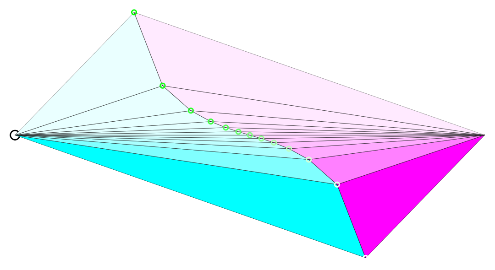
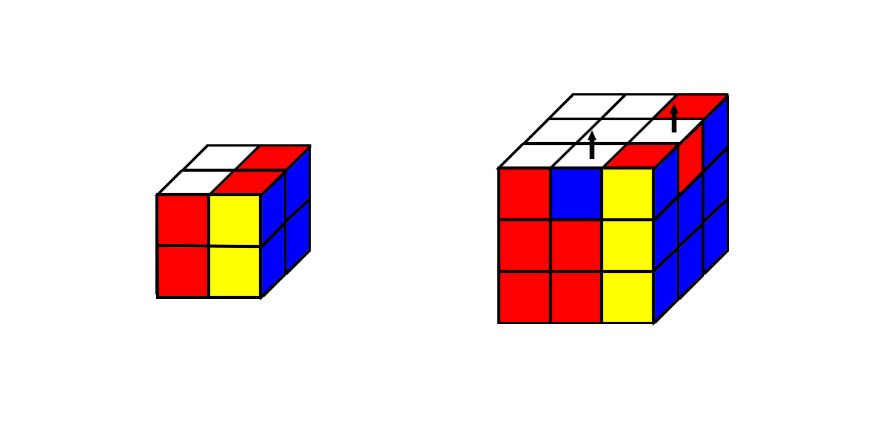
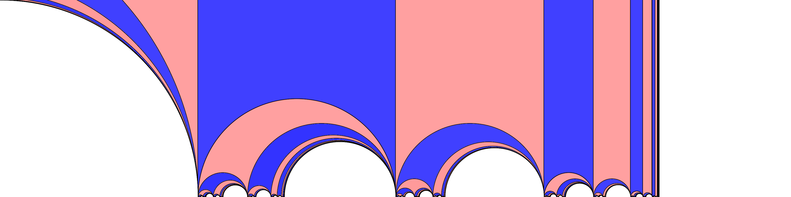

Charles Daly's Homepage
Thanks for stopping by! My name is Charles and I'm a Postdoctoral Scientist at the Max Planck Institute in the Geometry, Groups, and Dynamics group led by Anna Wienhard . Here you can find some of my research, teaching materials, and some math pictures.
My work is in low-dimensional topology and geometry with an emphasis on hyperbolic, affine, and projective manifolds. I like to use computers to explore these areas of mathematics both visually and computationally.
Geometry is full of really wild surprises, and being able to illustrate these phenomena is one of my favorite things to do. Apart from doing math, I love animals, music, video games, and cartoons. Feel free to contact me and chat it up about math!
Contact Information
- Work Address: Inselstraße 22, 04103 Leipzig, Germany
- Office: A3 09
- Email Address:
Mathematical Visualizations


